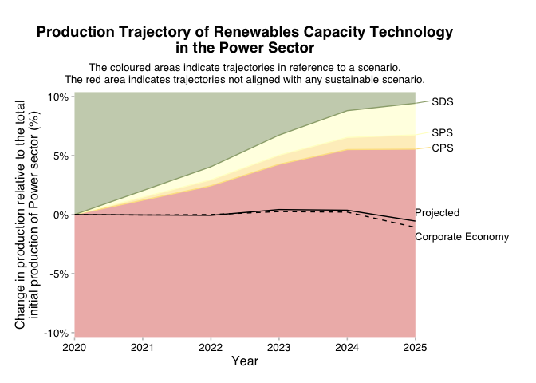
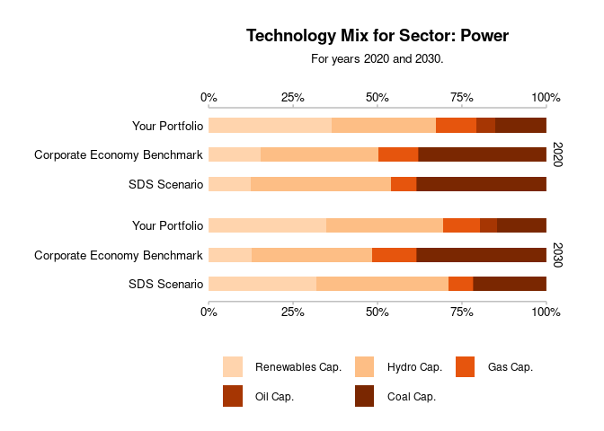

The goal of r2dii.plot is to help you plot 2DII data in an informative, beautiful, and easy way.
Installation
You can install the released version of r2dii.plot from CRAN with:
install.packages("r2dii.plot")And the development version from GitHub with:
# install.packages("devtools")
devtools::install_github("RMI-PACTA/r2dii.plot")Example
The r2dii.plot package is designed to work smoothly with other “r2dii” packages – r2dii.data, r2dii.match, and r2dii.analysis. It also plays well with the ggplot2 package, which helps you customize your plots. Here, we’ll use an example data set that comes with r2dii.plot and that resembles the output of the target_market_share() function in the r2dii.analysis package.
Plot trajectory chart
- Use
qplot_*()to quickly get a plot with standard titles and labels.
# `data` must meet documented "Requirements"
data <- market_share %>%
filter(
sector == "power",
technology == "renewablescap",
region == "global",
scenario_source == "demo_2020"
)
qplot_trajectory(data)
- Use
plot_*()for a more “bare” plot that you can customize yourself by modifying the input data and applyingggplot2functions.
data <- market_share %>%
filter(
sector == "power",
technology == "renewablescap",
region == "global",
scenario_source == "demo_2020",
between(year, 2020, 2035)
) %>%
mutate(
label = case_when(
metric == "projected" ~ "Your Portfolio",
metric == "corporate_economy" ~ "Benchmark (Corp. Econ.)",
metric == "target_sds" ~ "SDS Scenario",
metric == "target_sps" ~ "SPS Scenario",
metric == "target_cps" ~ "CPS Scenario",
TRUE ~ metric
)
)
plot_trajectory(data) +
labs(
title = "Power production trajectory for Renewables",
subtitle = "With reference to climate scenarios.",
x = "Year",
y = "Production (normalized to 2020)"
)
#> Warning: The `data` argument of `plot_trajectory()` must be prepped already as of
#> r2dii.plot 0.4.0.
#> ℹ From the next release you will need to call
#> `r2dii.plot::plot_trajectory(data)` prior to calling
#> `r2dii.plot::plot_trajectory()`.
#> ℹ Alternatively custom data preparation will also become possible.
#> This warning is displayed once every 8 hours.
#> Call `lifecycle::last_lifecycle_warnings()` to see where this warning was
#> generated.
For examples of other plots and data sets please visit Get started with r2dii.plot.
Funding
This project has received funding from the European Union LIFE program and the International Climate Initiative (IKI). The Federal Ministry for the Environment, Nature Conservation and Nuclear Safety (BMU) supports this initiative on the basis of a decision adopted by the German Bundestag. The views expressed are the sole responsibility of the authors and do not necessarily reflect the views of the funders. The funders are not responsible for any use that may be made of the information it contains.